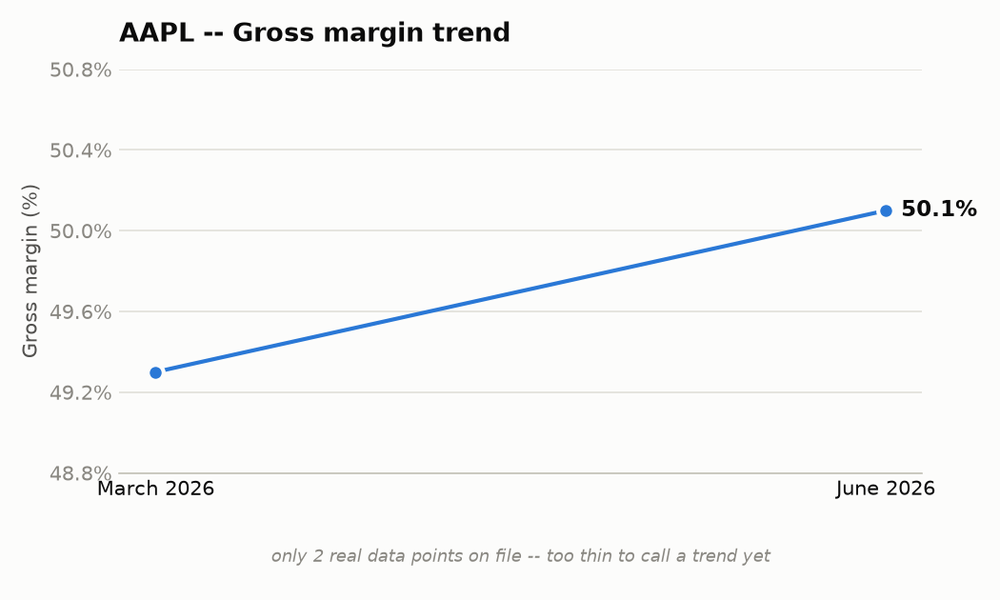

Early build of the template in summary_template.md, hand-assembled from real data (no new
extraction/matching code written yet — that's the open work the spec calls out). Every number
below is a real fact from output/AAPL_Q3_2026_facts.json / _snapshot.md (fact IDs shown) or
a real MarketDataLibrary row; nothing is invented. Where a section's designed data source isn't
usable yet, that's stated plainly rather than silently backfilled from somewhere else.
| Metric | Actual (June qtr) | vs. prior guidance |
|---|---|---|
| Revenue | $109.40B (+16% yoy) | not available — no AAPL call before this one in the dataset |
| EPS | $2.02/sh (+29% yoy) | not available |
| Gross margin | 50.1% (+80 bps qoq) | not available |
| Operating cash flow | $34.40B | — |
AAPL_2026_3-001, AAPL_2026_3-013, AAPL_2026_3-006, AAPL_2026_3-015
The chart shows yoy deltas as stat tiles — the real comparison available today, not the
actual-vs-guided delta bars the template design calls for. That "vs. prior guidance" column
is designed to compare this quarter's actual against what was guided into it last call — the
existing trajectory logic in snapshot.py already does this comparison, it just needs the
prior quarter's AAPL call in the gold set to populate it.

| Segment | Revenue | Growth (yoy) | Gross margin |
|---|---|---|---|
| iPhone | $54.30B | +22% | — |
| Mac | $10.40B | +29% | — |
| iPad | $6.20B | -6% | — |
| Wearables, Home & Accessories | $7.90B | +6% | — |
| Services | $30.70B | +12% | 75.6% |
Source note: this table is 100% transcript-extracted, not from MarketDataLibrary's
segments table — checked directly, AAPL has no Revenue by Segment category in segments
at all (only Revenue by Geography / EBIT by Geography / Gross Profit / Key Performance
Indicators). This is the real, current state, not a placeholder — for AAPL, this section
runs on the extractor alone. AAPL_2026_3-003, AAPL_2026_3-016, AAPL_2026_3-017,
AAPL_2026_3-018, AAPL_2026_3-005, AAPL_2026_3-010
Mac and iPhone both grew on what management called "an incredibly strong iPhone and Mac product cycle" with demand "beyond our expectation," while iPad declined on a difficult compare against last year's iPad launch. Services set records "in every category," per management, despite a 110bp sequential gross-margin dip attributed to product mix.

Both points are transcript-reported, not from MarketDataLibrary — financials is annual
(FY) + TTM only today, not quarterly, so a real trailing-quarters margin trend isn't
buildable from the DB yet. Two points is too thin to call a "trend" honestly; this section
will only become useful once either quarterly financials exist or enough consecutive real
calls accumulate in the gold set.

| Use of cash | Amount (June qtr) |
|---|---|
| Dividends paid | $4.00B |
| Share repurchases | $25.80B |
| Total capital returned | $33.00B |
| CapEx | not stated as a quarter figure on this call |
| M&A | not stated as a quarter figure — a >$30B multi-year Broadcom silicon agreement was announced (strategic commitment, not a booked quarterly cash outflow) |
AAPL_2026_3-021, AAPL_2026_3-022, AAPL_2026_3-023
Designed source is cash_flow's Financing + Investing Activities (which would also give
real CapEx and M&A cash flows, not just what a call happens to mention) — not usable yet:
MarketDataLibrary's cash_flow only has the Operating Activities table for ~5,035 of 5,039
symbols (confirmed on AAPL directly: 11 line items, all Operating Activities). This is a new
finding from tonight, same root cause as the balance_sheet gap, not yet fixed. Until it is,
this section is whatever capital-return figures the call states — real, but partial.

| June quarter | |
|---|---|
| Cash & securities | $147B |
| Total debt | $84B |
| Net cash | ~$63B |
AAPL_2026_3-019, AAPL_2026_3-020
Designed source is financials' balance_sheet statement — not usable yet: AAPL is one of
the ~5,042 symbols still missing the Liabilities/Equity sections (fix exists —
refetch_balance_sheet_liabilities.py in MarketDataLibrary — not yet run at scale). Figures
above are transcript-stated instead.
| Metric | Guided |
|---|---|
| Revenue growth (yoy) | 9% to 11% |
| Gross margin | 47% to 48% |
| Operating expenses | $19.10B to $19.40B |
| Tax rate | ~16.5% |
| FX impact on revenue | ~2.5 pp unfavorable (total company) |
AAPL_2026_3-025, AAPL_2026_3-029, AAPL_2026_3-031, AAPL_2026_3-033, AAPL_2026_3-024
Both revenue growth (16% → 9-11%) and gross margin (50.1% → 47-48%) are guided down from this quarter's actuals — the existing trajectory logic already flags both as "decelerating" and "lower" respectively.
Management cited third-party data (IDC) claiming share gains in both iPhone and Mac during the quarter: "According to IDC, we gained share globally during the quarter" (iPhone) and the same claim for Mac. On Mac specifically, management added color on displacement: "about half of the MacBook Neo large purchases by U.S. education institutions displaced Windows and Chromebook devices."
Headline item: a from-scratch Siri AI rebuild ("a completely reimagined version of Siri... integrated seamlessly across our platforms"), alongside new MacBook Neo and iPhone 17 hardware cited as demand drivers, AirPods Pro 3/Max 2, a new "Apple Upgrade" hardware-leasing program (with Klarna), and a >$30B multi-year custom-silicon agreement with Broadcom under Apple's U.S. manufacturing program.
Works today, real data, no placeholders: headline numbers, business segments (transcript side), forward guidance, competitive environment, product development, macro/regulatory — sections 1, 2 (partial), 6, 7, 8, 9.
Chart rendering built 2026-09-22 (charts.py, py charts.py --demo regenerates all five
PNGs in this doc). All five chart-bearing sections now render real, not-hand-drawn charts
from the same numbers already in this doc's tables — including sections 3-5, which are still
data-limited (see below), so their charts are honestly thin/partial rather than faked full.
Palette and color usage (categorical for true nominal categories like capital-allocation uses;
status green/red reserved for actual good/bad readings like segment growth direction or net
cash vs. debt; a labeled gray "not stated" bar rather than a fabricated number for CapEx/M&A)
follow the dataviz skill's validated default. Pixel-level polish (rounded bar caps, the 2px
inter-bar gap spec) was skipped as not worth the complexity for a local static-PNG report;
the substantive checks (correct color job, direct value labels, recessive gridlines, a table
next to every chart as the accessible alternative) are all honored.
Still blocked on MarketDataLibrary fixes that exist but haven't run at scale: margin trend
(needs quarterly financials, which don't exist in any form yet — bigger lift), capital
allocation (needs the cash_flow Financing/Investing gap fixed — not yet written), balance
sheet snapshot (fix written, not yet run) — sections 3, 4, 5. The charts for these sections
are real, but only as good as the transcript-only data feeding them today.
Not started: the actual sentence-to-segment matching engine that would replace this hand-assembly with real code (deliberately deferred again this session in favor of the chart work — still the real remaining engineering item for section 2).